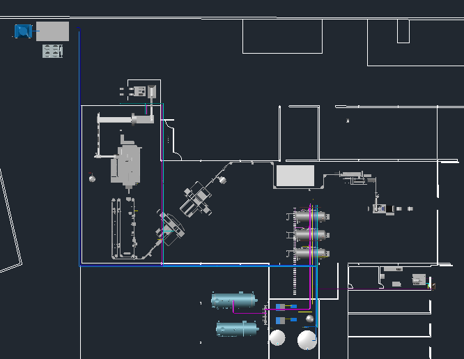
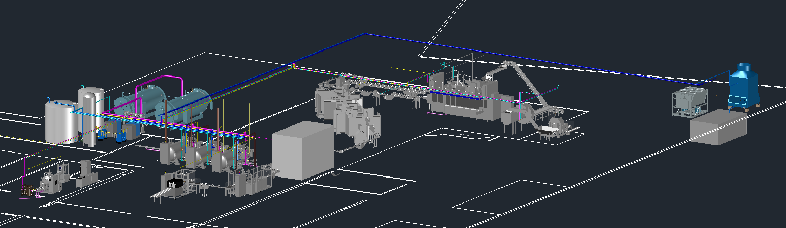
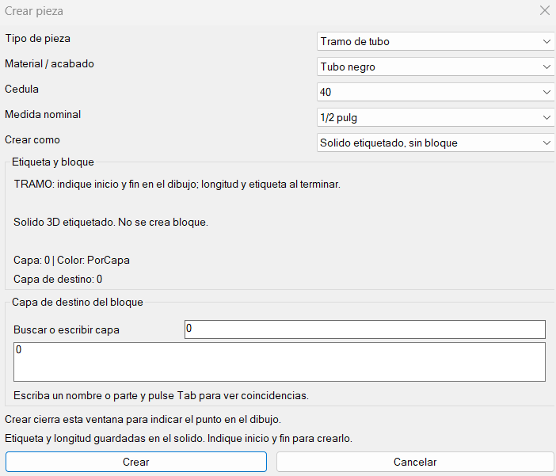
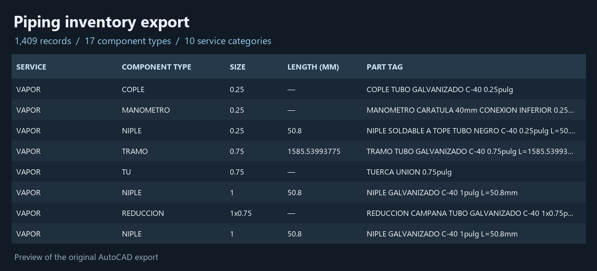
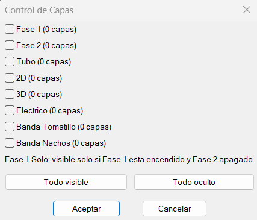

Facility Modeling
Coordinated equipment layout and modeled utility piping for a food production line and its pilot plant.


Industrial & Project Engineering
I coordinate production-line installations in food manufacturing, turn field measurements into AutoCAD layouts, and automate piping inventories for procurement.

Terranoble · Tetra Recart R2Plant layout and utility routingFacility Modeling
Coordinated equipment layout and modeled utility piping for a food production line and its pilot plant.

3D Modeling & AutoLISP
Built an AutoLISP tool that generates 3D pipe fittings with reusable geometry and structured part data.

CAD Data & Materials Control
Exported 1,409 tagged AutoCAD records to CSV to support materials consolidation for quotation and purchasing.

Drafting Automation
Developed focused drafting tools for layer visibility, pipe layout, and repetitive copying.

I’m an Industrial and Systems Engineering graduate and a Project Coordinator at Grupo Alimentos del Norte. I plan installations, reconfigurations, and expansions for food manufacturing lines. My work includes measuring equipment in the field and turning those measurements into 2D plans and 3D models that guide installation.
At Terranoble, I reviewed supplier drawings for the Tetra Recart R2 filling line, adjusted equipment coordinates, modeled utility piping, and supervised civil works. I also sized two preparation lines based on product weight, density, and filling times, and reviewed equipment options with suppliers. At Vision Foods, I’m working on a canning-line reconfiguration designed to improve material flow and shorten forklift routes.
I build AutoLISP tools to link piping components in AutoCAD to the materials lists used for procurement. For one project, I exported 1,409 inventory records and used them to consolidate the materials list for a quotation and a purchase order.
For inquiries about industrial project coordination, utility piping design, or AutoCAD automation, reach me on LinkedIn.